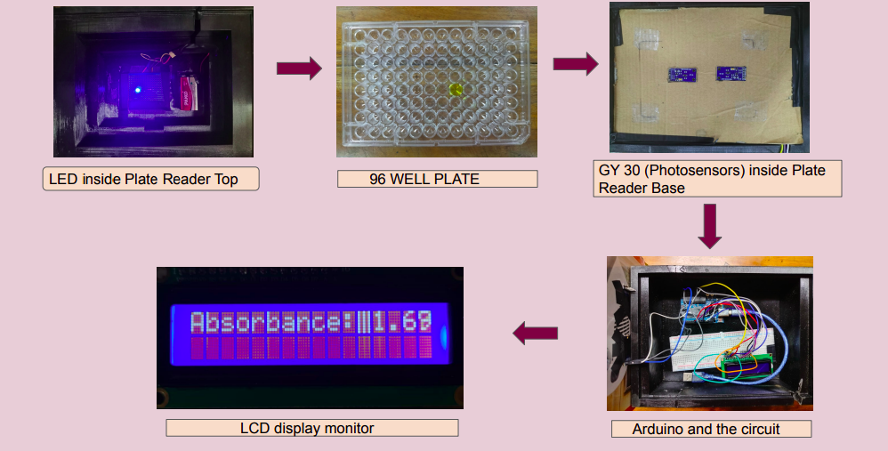

Structure of device
Our device contains three parts- Plate top reader : Holds light source and battery
- Plate reader base: Holds internal circuit and microcontroller
- Lid : Holds the sensor
Material
- Body of the device built using 3D printing with PETG(Polyethylene terephthalate glycol).
- LED blue diode light was used as light source
- The BH1750 is a 16-bit ambient light sensor was used as sensor.
- Curcumine dissolved in 100% acetic acid solution was used as solution for prototyping instead of Hepatitis B samples.
Final Design
